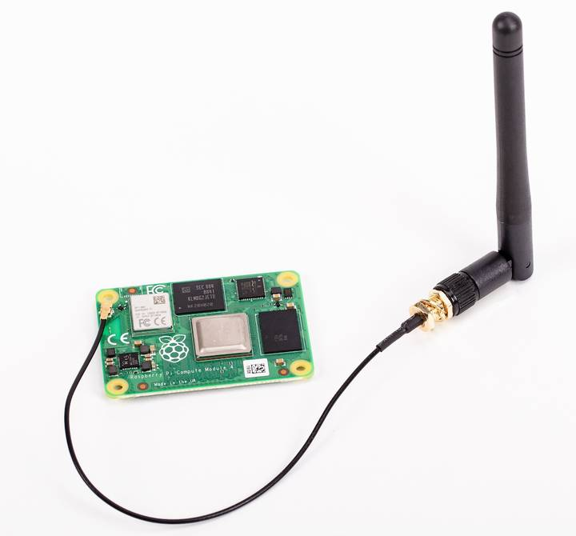
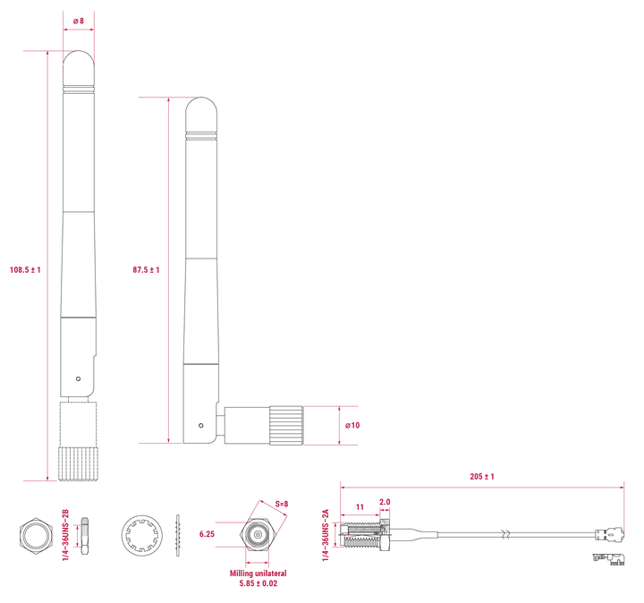
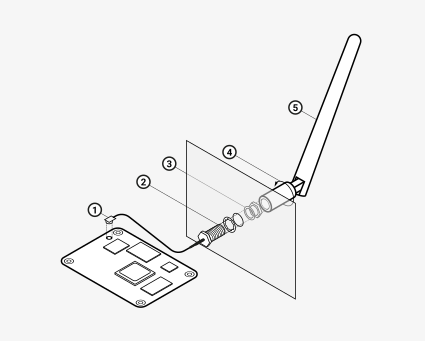

Install the antenna
The Antenna Kit provides a certified external antenna to boost wireless reception on a CM4 or CM5.

Figure 1. Antenna attached to a CM4
Antenna specifications
The antenna supports dual-band Wi-Fi and attaches to the U.FL connector on your CM4 or CM5. The antenna is approximately 108.5 mm at full height and approximately 87.5 mm long when at a 90 degree angle; the SMA to U.FL cable is approximately 205 mm long.

Figure 2. CM4 and CM5 antenna physical specifications
Connect an antenna through the CM5IO Case
You can use the antenna with the CM5IO Case. To attach the antenna to your Compute Module through the CM5IO Case, complete the first four steps outlined in Assemble the CM5IO case, and then complete following steps:
- Connect the U.FL connector. Connect the U.FL connector on the antenna cable to the U.FL-compatible connector on your Compute Module, next to the top-left mounting hole of your CM5. Do this before attaching a cooler (if using one) because the cooler can make it harder to attach the U.FL connector.
- Insert the SMA connector. Remove the rubber plug from the antenna port on the inside of the CM5IO Case. Then, from the inside of the case, push the SMA connector (with the flat side up) into the antenna port so that it extends through and is accessible from the outside.
- Fasten the SMA connector into place. Twist the retaining hexagonal nut and washer onto the SMA connector in a clockwise direction until it sits securely in place. Avoid excessive twisting when tightening to prevent damage.
- Attach the antenna to the SMA connector. Insert the SMA connector into the antenna port with the antenna facing outward and twist the antenna clockwise to secure it.
- Adjust the antenna. Move the antenna into its final position by turning it up to a 90 degree angle.
You can now complete the remaining steps outlined in Assemble the CM5IO case for mounting a CM5IO inside your case.

Figure 3. CM4 and CM5 antenna assembly diagram
To use the Antenna with your Compute Module, add a dtparam instruction in /boot/firmware/config.txt. Add the following line to the end of the config.txt file: dtparam=ant2
Related topic: Compute Module memory, storage and wireless variants